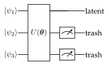
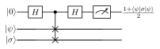
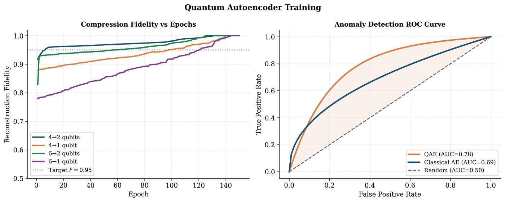

Chapter 13: Quantum Autoencoders¶
Autoencoders learn compact representations of data by compressing it through a bottleneck and reconstructing the original. Quantum autoencoders (QAEs) generalize this to quantum states: a parameterized quantum circuit compresses an \(n\)-qubit state into \(k < n\) qubits (latent space), discarding the rest, and a decoder recovers the original state. Applications span quantum state compression, noise filtering, anomaly detection, and quantum memory.
Learning Objectives
By the end of this chapter, you will be able to:
-
Explain the quantum autoencoder architecture of Romero et al. (2017)
-
Derive the SWAP-test and Hilbert–Schmidt inner product training objectives
-
Implement a QAE in PennyLane for pure-state compression
-
Apply QAEs to denoising and anomaly detection on quantum states
-
Analyse the information-theoretic limits of quantum data compression
13.1 Classical Autoencoders: A Brief Review¶
A classical autoencoder comprises an encoder \(f_\phi:\mathbb{R}^n\to\mathbb{R}^k\) and a decoder \(g_\psi:\mathbb{R}^k\to\mathbb{R}^n\) (\(k < n\)), trained to minimise the reconstruction loss:
The bottleneck forces the network to learn a low-dimensional latent representation \(z = f_\phi(x)\in\mathbb{R}^k\) capturing the essential structure of the data distribution.
Variational autoencoders (VAEs) extend this by learning a latent distribution \(q_\phi(z|x)\approx p(z|x)\), enabling generative sampling. Quantum analogues of both exist; this chapter focuses on the compression/ denoising variant.
13.2 Quantum Autoencoder Architecture¶
Definition: Quantum Autoencoder (Romero et al., 2017)
A quantum autoencoder (QAE) for \(n\)-qubit input states consists of:
-
Encoder: parameterized unitary \(U(\boldsymbol{\theta})\) acting on \(n\) qubits.
-
Latent space: \(k\) qubits retained (the “latent” register).
-
Trash register: \(n-k\) qubits discarded (traced out).
-
Decoder: \(U^\dagger(\boldsymbol{\theta})\) – the inverse encoder acting on latent + \(n-k\) reference qubits.
The key insight of Romero et al. (Romero et al. 2017): the decoder need not be separately parameterized – it is simply the conjugate transpose of the encoder \(U^\dagger\). This makes the QAE symmetric.
Architecture diagram (for \(n=3\), \(k=1\)):

After encoding, the trash qubits should be in a fixed reference state \(|0\rangle^{\otimes(n-k)}\) for perfect compression. The training objective maximises the overlap between the trash qubits and \(|0\rangle\).
13.3 Training Objectives¶
13.3.1 Fidelity-Based Loss¶
For a pure input state \(|\psi\rangle\), after encoding:
Training objective: maximise the overlap of the trash register with the reference state \(|0\rangle^{\otimes(n-k)}\):
where \(\rho_{\text{trash}} = \mathrm{Tr}_{\text{latent}}[U|\psi\rangle\langle\psi|U^\dagger]\).
13.3.2 SWAP-Test Fidelity¶
An alternative formulation uses the SWAP test to measure fidelity between the original input and the reconstructed output:
where \(\Pi_{\text{ref}} = |0\rangle\langle 0|^{\otimes(n-k)}\otimes I_k\).

The SWAP-test ancilla measurement yields probability \(P(0) = \frac{1}{2}(1 + \langle\psi|\sigma|\psi\rangle)\), so \(F = 2P(0) - 1\).
13.3.3 Hilbert–Schmidt Inner Product (Mixed States)¶
For mixed-state inputs \(\rho\) (e.g. noisy states):
where \(\sigma = \mathcal{D}\circ\mathcal{E}(\rho)\) is the decoded state after encoding. This is estimated via the destructive SWAP test.
Solved Example 13.1
Problem: For a 3-qubit QAE compressing to 1 qubit, what is the maximum compression ratio, and what is the information-theoretic requirement on the input ensemble for perfect compression?
Solution: Compression ratio \(= n/k = 3/1 = 3\times\). The input space is \(2^3=8\)-dimensional, the latent space is \(2^1=2\)-dimensional.
By Schumacher compression (Schumacher 1995), perfect quantum compression to \(k\) qubits is possible if and only if the input ensemble \(\{p_i, |\psi_i\rangle\}\) has von Neumann entropy \(S(\rho) \leq k\) qubits, where \(\rho = \sum_i p_i |\psi_i\rangle\langle\psi_i|\).
If \(S(\rho) > k\), information is necessarily lost. The QAE loss equals \(S(\rho) - k\) qubits of lost information in the optimal case.
For a 3-qubit maximally mixed state \(\rho = I/8\), \(S(\rho) = 3\) bits, so compression to 1 qubit necessarily loses 2 qubits of information – perfect reconstruction is impossible.
13.4 Encoder Ansatz Design¶
The encoder \(U(\boldsymbol{\theta})\) must be expressive enough to learn the optimal compression. Common choices:
Algorithm: QAE Encoder Ansatz
-
Strongly entangling layers: \(L\) layers of single-qubit rotations + CNOT ladders. Parameters: \(3Ln\) per layer.
-
Hardware-efficient ansatz: matches device connectivity.
-
Problem-inspired: exploit known structure (e.g. translation invariance for periodic quantum states).
Circuit depth: For \(n\)-qubit inputs, \(O(n^2)\) two-qubit gates suffice to implement any unitary (via KAK decomposition).
13.5 Quantum State Denoising¶
A QAE trained on pure states can act as a quantum denoiser: given a noisy state \(\mathcal{N}(\rho)\) (depolarizing, dephasing, amplitude damping), the encoder finds a latent representation that filters out noise.
Procedure:
-
Prepare training pairs: \((|\psi_i\rangle,\, \mathcal{N}(|\psi_i\rangle))\)
-
Train QAE to compress \(\mathcal{N}(|\psi_i\rangle)\) and reconstruct \(|\psi_i\rangle\)
-
At inference: apply encoder + decoder to noisy input
Note
Quantum state denoising via QAE differs from quantum error correction (QEC): QEC uses syndrome measurements and is exact; QAE denoising is variational and approximate but works on NISQ hardware without ancilla overhead.
13.6 Anomaly Detection with QAE¶

A QAE trained on “normal” quantum states will reconstruct normal states well but fail on anomalous ones. The reconstruction error serves as an anomaly score:
Applications:
-
Quantum hardware calibration: detect drifting qubits via state anomaly
-
Quantum chemistry: identify anomalous molecular configurations
-
Quantum communication: detect eavesdropping via state perturbation detection
13.7 Implementation¶
import pennylane as qml
import numpy as np
import torch
import torch.nn as nn
# QAE: 4 qubits -> 2 qubit latent space
n_qubits = 4
n_latent = 2
n_trash = n_qubits - n_latent # 2 trash qubits
n_layers = 3
dev = qml.device("default.qubit", wires=n_qubits)
@qml.qnode(dev, interface="torch", diff_method="parameter-shift")
def qae_circuit(state_params, enc_weights):
"""
QAE circuit: encode target state, apply encoder U(theta),
measure fidelity of trash qubits with |0>.
state_params: angles for preparing input state
enc_weights: encoder ansatz parameters shape (n_layers, n_qubits, 3)
"""
# Prepare input state (angle encoding)
qml.AngleEmbedding(state_params, wires=range(n_qubits), rotation='Y')
# Encoder: strongly entangling layers
qml.StronglyEntanglingLayers(enc_weights, wires=range(n_qubits))
# Measure trash qubits (want them to be |0>)
return [qml.expval(qml.PauliZ(i)) for i in range(n_latent, n_qubits)]
def qae_loss(state_params, enc_weights):
"""
Loss = 1 - fidelity_of_trash_with_0.
expval PauliZ = 1 if |0>, -1 if |1>.
Fidelity with |0> = (1 + <Z>) / 2 for each qubit.
"""
z_vals = qae_circuit(state_params, enc_weights)
fidels = [(1 + z) / 2 for z in z_vals]
avg_fid = sum(fidels) / n_trash
return 1 - avg_fid
@qml.qnode(dev, interface="torch")
def full_autoencoder(state_params, enc_weights):
"""Encode + decode (U^dag) to reconstruct original state."""
# Prepare input
qml.AngleEmbedding(state_params, wires=range(n_qubits), rotation='Y')
# Encode
qml.StronglyEntanglingLayers(enc_weights, wires=range(n_qubits))
# Reset trash qubits (set to |0> reference)
for w in range(n_latent, n_qubits):
qml.PauliX(w) # simple reset approximation
qml.PauliX(w)
# Decode = U^dagger
qml.adjoint(qml.StronglyEntanglingLayers)(enc_weights,
wires=range(n_qubits))
return qml.state()
# Training
weight_shape = (n_layers, n_qubits, 3)
enc_weights = torch.tensor(
np.random.uniform(-np.pi, np.pi, weight_shape),
dtype=torch.float32, requires_grad=True
)
# Training data: 20 random 4-qubit states (described by 4 angle params each)
np.random.seed(42)
train_states = torch.tensor(
np.random.uniform(0, np.pi, (20, n_qubits)), dtype=torch.float32
)
optimizer = torch.optim.Adam([enc_weights], lr=0.05)
print("Training QAE...")
for epoch in range(100):
total_loss = 0.0
optimizer.zero_grad()
for s in train_states:
loss = qae_loss(s, enc_weights)
total_loss += loss
total_loss = total_loss / len(train_states)
total_loss.backward()
optimizer.step()
if (epoch + 1)
print(f"Epoch {epoch+1:3d} | Loss: {total_loss.item():.4f} "
f"| Fidelity: {1-total_loss.item():.4f}")
# Evaluate compression fidelity on new state
test_state = torch.tensor([0.8, 1.2, 0.4, 1.7])
loss_val = qae_loss(test_state, enc_weights)
print(f"\nTest compression fidelity: {1 - loss_val.item():.4f}")
# Anomaly detection demo
normal_state = torch.tensor([0.9, 1.1, 0.5, 1.6])
anomaly_state = torch.tensor([np.pi, np.pi, np.pi, np.pi]) # distinct
score_normal = qae_loss(normal_state, enc_weights).item()
score_anomaly = qae_loss(anomaly_state, enc_weights).item()
print(f"Anomaly score (normal): {score_normal:.4f}")
print(f"Anomaly score (anomaly): {score_anomaly:.4f}")
13.8 Information-Theoretic Limits¶
Definition: Schumacher Compression
For an ensemble \(\{p_i, |\psi_i\rangle\}\) with density matrix \(\rho = \sum_i p_i|\psi_i\rangle\langle\psi_i|\), Schumacher’s quantum source coding theorem (Schumacher 1995) states:
The minimum number of qubits required for reliable compression is \(S(\rho) = -\mathrm{Tr}[\rho\log_2\rho]\) (von Neumann entropy).
A QAE achieves this limit when \(U(\boldsymbol{\theta})\) converges to the optimal compression unitary that maps the principal eigenvectors of \(\rho\) to the latent register and discards the rest.
Tip
The QAE encoder finds, via gradient descent, an approximation to the typical subspace of the input ensemble – the quantum analogue of Shannon’s typical sequences. The latent register spans the most probable subspace of \(\rho\).
13.9 Chapter Summary¶
Chapter Summary
-
QAE architecture: Encoder \(U(\boldsymbol{\theta})\) compresses \(n\) qubits to \(k\) latent qubits; decoder is \(U^\dagger\). Symmetric by design.
-
Training: Maximise fidelity of trash register with \(|0\rangle\) via SWAP test or Pauli-Z expectation values. Gradient via PSR.
-
Denoising: Train on noisy/clean pairs; reconstruction error filters noise from quantum states.
-
Anomaly detection: High reconstruction error \(\Rightarrow\) anomalous state. Useful for hardware calibration and security.
-
Fundamental limits: Schumacher’s theorem gives the von Neumann entropy as the minimal qubit compression bound.
Exercises
Exercise . Explain why the QAE decoder is simply \(U^\dagger(\boldsymbol{\theta})\) and not a separately parameterized circuit. What condition on the input ensemble allows this to work?
Exercise . For a 4-qubit QAE compressing to 2 qubits, derive the maximum number of linearly independent input states that can be perfectly compressed. How does this relate to the Hilbert-space dimension?
Exercise . Implement a quantum state denoiser using the QAE above: generate 50 random 2-qubit pure states, apply depolarizing noise (\(p=0.1\)), train the QAE to reconstruct the clean states, and plot reconstruction fidelity vs. noise strength.
Further Reading
-
Romero et al. (2017) (Romero et al. 2017) — original QAE proposal
-
Schumacher (1995) (Schumacher 1995) — quantum source coding theorem
-
Pepper et al. (2019) — QAE for mixed states and denoising
-
Cao & Babbush (2024) — QAE benchmarks on near-term hardware